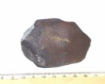
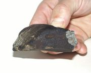
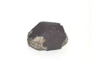

Meteority
Původ, složení, názvy, pády, meteority Příbram a Morávka
Meteority jsou pevná tělesa, která přežijí pád atmosférou a dopadnou na zem. Jsou to zbytky meteorických těles, které zazářily jako jasný meteor nebo bolid. I takových těles dopadne na Zemi jen velmi malá část. Meteory kometárního původu se vypaří, proto téměř všechny nalezené meteory pocházejí z pásu planetek mezi Marsem a Jupiterem. Některé pocházejí z Marsu nebo Měsíce, když byly vymrštěny únikovou rychlostí z mateřského tělěsa.
Meteority podle složení
Meteority podle složení rozeznáváme na:
- kamenné meteority (aerolity)
obsahují křemičitany, většinou příměsi niklu a železa- chondrity (84%)
obsahují chondruly (chondry), což jsou kulovité shluky (mikroskopické rozměry až 1 mm) z olivínu nebo pyroxenu. U chondritů zjišťujeme křemičitany, kovy, sirníky. Chondrity mají 30 podtypů, z nihž jsou nejdůležitější uhlíkaté chondrity (5% všech meteorů, 6% chondritů). Jsou zajímavé tím, že se v nich objevily útvary, které byly kdysi považované za mikrofosilie organismů. - achondrity (8%)
neobsahují chondruly a kovy
- chondrity (84%)
- siderolity (2%)
přechodné typy k železným meteoritům - železné meteory (siderity) (6%)
obsahují výhradně nebo většinou kovové složky
Všechny chondrity mají téměř stejné chemické složení a od svého vzniku neprodělaly žádnou chemickou změnu (nebyly součástí žádného většího tělesa) a pravděpodobně byly součástí původního materiálu, ze kterého vznikla Sluneční soustava. Pro to svědčí shodné zastoupení izotopů prvků u různých chondritů. Uhlíkaté chondrity jsou snad ještě méně vyvinutým materiálem. Obsahují velké množství uhlíku (sloučniny a animokyseliny) a vody.
Achondrity již vykazují stopy určitého vývoje. Prodělaly tavení a chemické změny. Mají vzhled čedičů a pravděpodobně pocházejí z povrchu většího tělesa. Železné meteory by pak pocházely z nitra takových těles.
Názvy meteoritů
Meteority se většinou nazývají podle nejbližšího obydleného místa poblíž pádu.
Pády meteoritů
Na Zemi dopadá za rok 5000 až 17 000 tun meteorického materiálu. V roce 1985 bylo ve sbírkách muzejí uloženo 2500 meteoritů. Z jednoho pádu může pocházet více úlomků. To se nazývá meteoritický déšť.
Meteoritů nalezených bezprostředně po pádu je 92 % kamenných, protože je jich o hodně více než železných, ale nalezených dodatečně je většina železných, protože se mnohem lépe odlišují od okolí. Kamenné meteory také rychle zvětrávají. Hodně meteorů se poslední dobou nalézá na pouštích a souvislých ledovcových plochách např. v Antarktidě a Sahaře.

Morávka 1

Morávka 2

Horní Tošanovice
{kind=link}
{kind=link}
{kind=link}
Typické meteorické těleso vstupující do atmosféry Země, které přečká průlet ovzduším vstupuje do atmosféry rychlostí menší než 20 km·s−1 a začíná zářit ve výškách 120 – 150 km. Svítí jako bolid a pohasíná ve výškách okolo 20 km. Zde je bržděno odporem vzduchu a padá na Zemi volným pádem. Jako stopa po jeho dopadu zůstane malá jamka. Když je těleso větší, může po něm zůstat kráter.
Meteorit Příbram
Podařilo se ho vyfotografovat sítí fotografických komor. Pozorován 7. 4. 1959 hvězdárnou Ondřejov a Prčice. Rozpadl se na úlomky Luhy, Hojšín a Dražkov.
Meteorit Morávka
Dne 6. 5. 2000, ve 13:51:50 středoevropského letního času byl z mnoha míst České republiky, Slovenska a Polska pozorován denní bolid. Byl způsoben kamenným kosmickým tělesem (chondrit) o rozměru řádově jeden až dva metry.
Těleso vstoupilo do zemské atmosféry rychlostí 23 km·s-1. Povrch se začal ohřívat a ve výškách kolem 90 km nad zemí se začal tavit a odpařovat. Když se těleso dostalo do hustších vrstev atmosféry ve výškách pod 40 km, začalo se drobit na menší kousky.
Předpokládá se, že do okolí obce Morávka (cca 30 km dlouhého) dopadlo okolo 100 meteoritů. Z nich tři byly nalezeny – meteority Morávka 1 (214 g), Morávka 2 (329 g) a Horní Tošanovice (91 g).
Odkazy
- http://www.asu.cas.cz/~borovic/bolid.htm
Denní bolid z 6. května 2000 (a druhý z 10. května) - J. Borovička